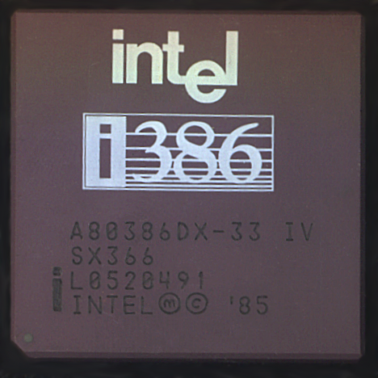

El 9080
El Am9080 es un CPU fabricado por AMD. Originalmente fue producido sin licencia como un clon del Intel 8080, con ingeniería inversa hecha por Shawn y Kim Hailey fotografiando un temprano chip de Intel y desarrollando diagramas esquemáticos y lógicos de las imágenes.1 En la producción inicial, los chips costaron alrededor de 50 centavos en hacerse, dando 100 chips por oblea, y fueron vendidos en el mercado militar por $700 cada uno. Las primeras versiones del Am9080 estuvieron disponibles en abril de 1974. Este CPU operaba a una velocidad de 2 MHz. Posteriormente, un acuerdo fue realizado con Intel para convertirse en una fuente secundaria licenciada para el 8080, permitiendo a los chips de ambos fabricantes entrar en mercados que no aceptarían una parte de fuente única.
El 80826
 Tras las versiones iniciales a 6 MHz y 8 MHz, Intel lanzó un modelo a 12,5 MHz. AMD y Harris ampliaron esa velocidad a 20 MHz y 25 MHz, respectivamente. En promedio, el 80286 tenía una velocidad de unas 0,21 instrucciones por ciclo de reloj.3 El modelo de 6 MHz operaba a 0,9 MIPS, el de 10 MHz a 1,5 MIPS, y el de 12 MHz a 1,8 MIPS.
El rendimiento del 80286 por ciclo de reloj es más del doble que el de sus predecesores, el Intel 8086 y el Intel 8088. De hecho, el aumento del rendimiento por ciclo de reloj puede ser el mayor entre las diferentes generaciones de procesadores x86. El cálculo de los modos de direccionamiento más complejos (como base + índice) utilizaba menos ciclos de reloj porque era realizado por un circuito especial en el 286; el 8086 tenía que realizar el cálculo de la dirección efectiva en la ALU general, lo cual tomaba muchos ciclos. Además, las operaciones matemáticas complejas (como MUL/DIV) tomaban menos ciclos que en el 8086.
Al tener un bus de direcciones de 24 bits, es capaz de direccionar hasta 16 MiB de memoria RAM, mientras que el 8086 solo puede direccionar 1 MiB. Aunque el MS-DOS puede utilizar la RAM adicional (memoria extendida) mediante una llamada a la BIOS INT 15h, AH=87h, o como disco RAM o mediante emulación de memoria expandida habiendo habilitado previamente mediante software la memoria extendida, el costo de la memoria y la rareza de software que utilizara la memoria extendida y que pocos ordenadores basados en el i286 tuvieron más de 1 MiB de memoria. Adicionalmente, había una reducción de rendimiento involucrada al acceder la memoria extendida desde el modo real, como se indica a abajo.
El i286 fue diseñado para correr aplicaciones multitarea, incluyendo comunicaciones (como PBX automatizadas), control de procesos en tiempo real y sistemas multiusuario.
El último nivel E-stepping del 80286 fue un muy limpio CPU, libre de varios errores significativos que causaron problemas para los programadores y los escritores de sistemas operativos en los primeros CPU B-step y C-step (comunes en los AT y los clones AT).
Tras las versiones iniciales a 6 MHz y 8 MHz, Intel lanzó un modelo a 12,5 MHz. AMD y Harris ampliaron esa velocidad a 20 MHz y 25 MHz, respectivamente. En promedio, el 80286 tenía una velocidad de unas 0,21 instrucciones por ciclo de reloj.3 El modelo de 6 MHz operaba a 0,9 MIPS, el de 10 MHz a 1,5 MIPS, y el de 12 MHz a 1,8 MIPS.
El rendimiento del 80286 por ciclo de reloj es más del doble que el de sus predecesores, el Intel 8086 y el Intel 8088. De hecho, el aumento del rendimiento por ciclo de reloj puede ser el mayor entre las diferentes generaciones de procesadores x86. El cálculo de los modos de direccionamiento más complejos (como base + índice) utilizaba menos ciclos de reloj porque era realizado por un circuito especial en el 286; el 8086 tenía que realizar el cálculo de la dirección efectiva en la ALU general, lo cual tomaba muchos ciclos. Además, las operaciones matemáticas complejas (como MUL/DIV) tomaban menos ciclos que en el 8086.
Al tener un bus de direcciones de 24 bits, es capaz de direccionar hasta 16 MiB de memoria RAM, mientras que el 8086 solo puede direccionar 1 MiB. Aunque el MS-DOS puede utilizar la RAM adicional (memoria extendida) mediante una llamada a la BIOS INT 15h, AH=87h, o como disco RAM o mediante emulación de memoria expandida habiendo habilitado previamente mediante software la memoria extendida, el costo de la memoria y la rareza de software que utilizara la memoria extendida y que pocos ordenadores basados en el i286 tuvieron más de 1 MiB de memoria. Adicionalmente, había una reducción de rendimiento involucrada al acceder la memoria extendida desde el modo real, como se indica a abajo.
El i286 fue diseñado para correr aplicaciones multitarea, incluyendo comunicaciones (como PBX automatizadas), control de procesos en tiempo real y sistemas multiusuario.
El último nivel E-stepping del 80286 fue un muy limpio CPU, libre de varios errores significativos que causaron problemas para los programadores y los escritores de sistemas operativos en los primeros CPU B-step y C-step (comunes en los AT y los clones AT).
El 486
Los Intel 80486 (i486, 486) son una familia de microprocesadores de 32 bits con arquitectura x86 diseñados y fabricados por Intel Corporation y también fabricados mediante licencia o ingeniería inversa por otras empresas como IBM, Texas Instruments, AMD, Cyrix y Chips and Technologies con diseños distintos o clonados. Los i486 son muy similares a sus predecesores, los Intel 80386. Las diferencias principales son que los i486 tienen un conjunto de instrucciones optimizado, una unidad de coma flotante y un caché unificado integrados en el propio circuito integrado del microprocesador y una unidad de interfaz de bus mejorada. Estas mejoras hacen que los i486 sean el doble de rápidos que un i386 e i387 a la misma frecuencia de reloj. De todos modos, algunos i486 de gama baja son más lentos que los i386 más rápidos. Las velocidades de reloj típicas para los i486 eran: 16 MHz (no muy frecuente) 20 MHz (tampoco frecuente) 25 MHz 33 MHz 40 MHz 50 MHz (típicamente un motherboard de 25 MHz con duplicación del reloj dentro del microprocesador) 66 MHz (33 MHz con duplicación del reloj) 75 MHz (25 MHz con triplicación del reloj) 80 MHz (versión de AMD de 40 MHz con duplicación de reloj) 100 MHz (33 MHz con triplicación del reloj) 120 MHz (40 MHz con triplicación de reloj, exclusivo de AMD). Existió un 80486 de 133 MHz fabricado por AMD denominado Am5x86-P75 que disponía de 16 KB de caché L1, arquitectura de 0,35 micras (contra las 0,6 micras de los modelos anteriores), un multiplicador de 4x y FSB de 33 MT/s, del cual se fabricaron también diferentes versiones con diferente voltaje y diferente encapsulación, de 3,3 V y 3,45 V, posibilitando una enorme capacidad para el overclock que le permitía subir hasta los 160 MHz, equiparando su rendimiento con el de un Pentium-90. Posteriormente AMD diseñó el Am5x86-P75+ de 150 MHz, 16 KB de caché L1, multiplicador 3x y FSB de 55 MT/s a 3,45 V, haciéndolo el procesador 80486 más potente jamás fabricado, del cual apenas se comercializaron unidades siendo un preciado objeto de colección entre aficionados.
El 386
 El Intel 80386 (i386, 386) es un microprocesador CISC con arquitectura x86. Durante su diseño se lo llamó 'P3', debido a que era el prototipo de la tercera generación x86. El i386 fue empleado como la unidad central de proceso de muchos ordenadores personales desde mediados de los años 1980 hasta principios de los 90. Fabricado y diseñado por Intel, el procesador i386 fue lanzado al mercado el 16 de octubre de 1985. Intel estuvo en contra de fabricarlo antes de esa fecha debido a que los costos de producción lo habrían hecho poco rentable. Los primeros procesadores fueron enviados a los clientes en 1986. Del mismo modo, las placas base para ordenadores basados en el i386 eran al principio muy elaboradas y caras, pero con el tiempo su diseño se racionalizó. En mayo de 2006 Intel anunció que la fabricación del 386 finalizaría a finales de septiembre de 2007.1 Aunque ha quedado obsoleto como CPU de ordenador personal, Intel ha seguido fabricando el chip para sistemas embebidos y tecnología aeroespacial.
El itanium
microprocesador de la arquitectura Intel Itanium (antes llamada IA64, creada por Hewlett-Packard y desarrollada conjuntamente por HP e Intel) que Intel lanzó al mercado. Aunque su lanzamiento inicialmente se planeó para 1998, no se produjo hasta mayo de 2001. Este procesador se fabricaba utilizando un proceso de 180 nm y disponía de 32 KB de memoria caché de primer nivel (16 para datos y 16 para instrucciones), 96 KB de caché de segundo nivel integrada en el núcleo y 2 o 4 MB de caché de tercer nivel exterior al núcleo. Estaba disponible en versiones a 733 u 800 MHz. La arquitectura del Itanium se diferencia drásticamente de las arquitecturas x86 y x86-64 usadas en otros procesadores de Intel. La arquitectura se basa en un explícito paralelismo a nivel de instrucción, con el compilador tomando decisiones sobre qué instrucciones deben ejecutarse en paralelo. Este acercamiento permite que el procesador ejecute hasta seis instrucciones por ciclo de reloj. A diferencia de otras arquitecturas superescalares, Itanium no precisa de hardware elaborado para seguir la pista de las dependencias de las instrucciones durante la ejecución paralela. En el momento de su lanzamiento (Junio de 2001), Itanium no era superior a los microprocesadores contemporáneos RISC y CISC. Compitió por el segmento bajo del mercado (de 4 CPUs para abajo) con los servidores basados en los procesadores x86, y en el segmento alto con las arquitecturas IBM POWER y Sun SPARC. Intel reposicionó al Itanium para concentrarse en la gama alta y los ordenadores HPC, intentando duplicar el acertado esquema de mercado horizontal de los x86 (una sola arquitectura, múltiples vendedores de sistemas). Su éxito se limita a reemplazar a los sistemas PA-RISC y Alpha de HP y a los MIPS en los HPC de Silicon Graphics. POWER y SPARC permanecen fuertes, mientras que la arquitectura x86 de 32 bits crece en el espacio empresarial. Con las economías de escala alimentadas por su enorme base instalada, x86 es la arquitectura horizontal preeminente en el mercado empresarial. Intel y HP reconocen que Itanium no es competitivo y lo reemplazan por el Itanium 2 un año antes de lo planeado, en 2002. Solamente algunos miles de los Itanium se vendieron, debido a la disponibilidad limitada causada por baja producción, relativamente pobre rendimiento y alto coste. Sin embargo, esas máquinas eran útiles para desarrollar software para los Itanium 2. IBM creó un supercomputador basado en este procesador.1
Desarrollador= Santiago Herbes